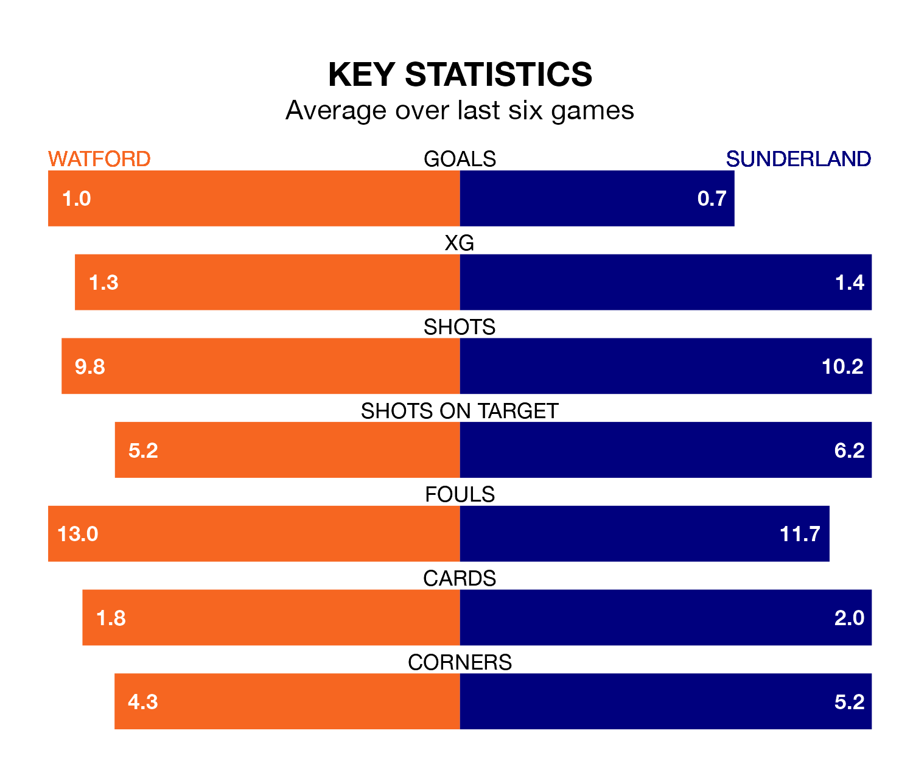

Watford face Sunderland at Vicarage Road on Saturday looking to secure a first win in seven EFL Championship games.
The Hornets have lost one and drawn five matches since they last earned three points – against Birmingham City on March 16.
They face a Sunderland side who have won two and drawn two over that time.
In the last 10 years, Watford and Sunderland have played each other on seven occasions. They won two each, and they drew three times.
On average, the Hornets scored 1.1 goals and the Black Cats 1.3 in those matches.
Their last meeting was on October 4, when Sunderland won 2-0 at home.
With 52 goals in 44 games so far this season, Sunderland are scoring at below the league average rate with 1.2 goals per game. But they are conceding fewer than average too, letting in 51 goals at a rate of 1.2 per game.
Watford, meanwhile, are average scorers, with 1.3 goals per game. They have also conceded 1.3 goals per game.
In Anthony Patterson, the Black Cats can rely on one of the league's safest pair of hands. He has kept 13 clean sheets in his 44 appearances this season in EFL Championship.
In the Hornets's net, Daniel Bachmann has 10 clean sheets in 25 games.
The home side are 15th in the table after 44 games, of which they have won 12 and drawn 17, earning 53 points.
The visitors are two places ahead of Watford in 13th, with 16 wins and eight draws putting them on 56 points.
Watford's last match was on April 20, a 0-0 draw against Hull City.
Sunderland lost 1-0 against Millwall last time out, also on April 20.
Updated: 07:59 (UTC), 26/04/24